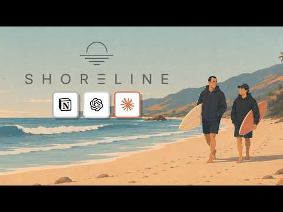
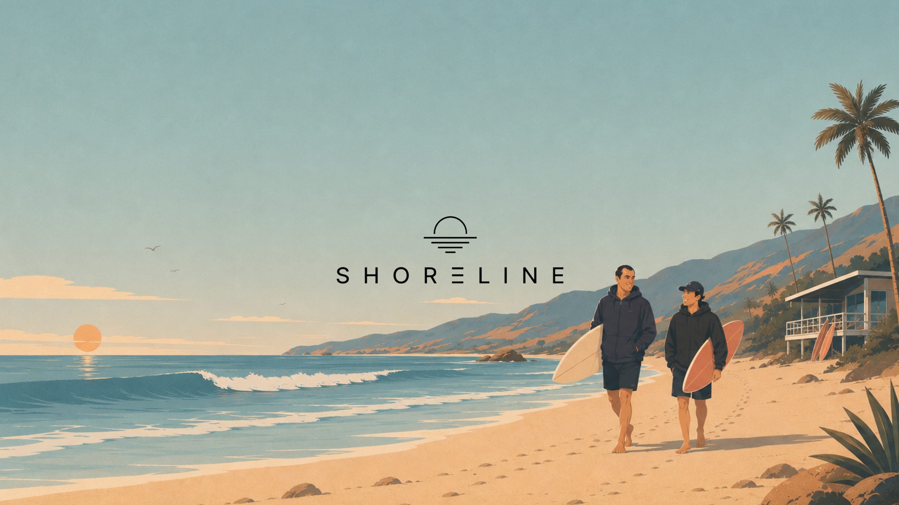

01
Company brain
Shared memory for AI work.
Season 1
Agents, company brains, automation, and taste.
All notes.
Latest

Shoreline Ep. 3
Tokens, context, company memory, and AI-native work.
Topics
Shared memory for AI work.
Workers, coordinators, interfaces.
Repeatable systems for daily work.
Context, costs, and routing.
Codex, Claude Code, Cursor.
Taste before shipping.
Resources
Agentic coding workflows.
Long-running code work.
AI-native editing.
Notes and memory.
Pick the right model.
Sales work with agents.
About Shoreline
Short episodes. Useful notes. Clean links.

AI-native work, memory, automation, and judgment.
Listen